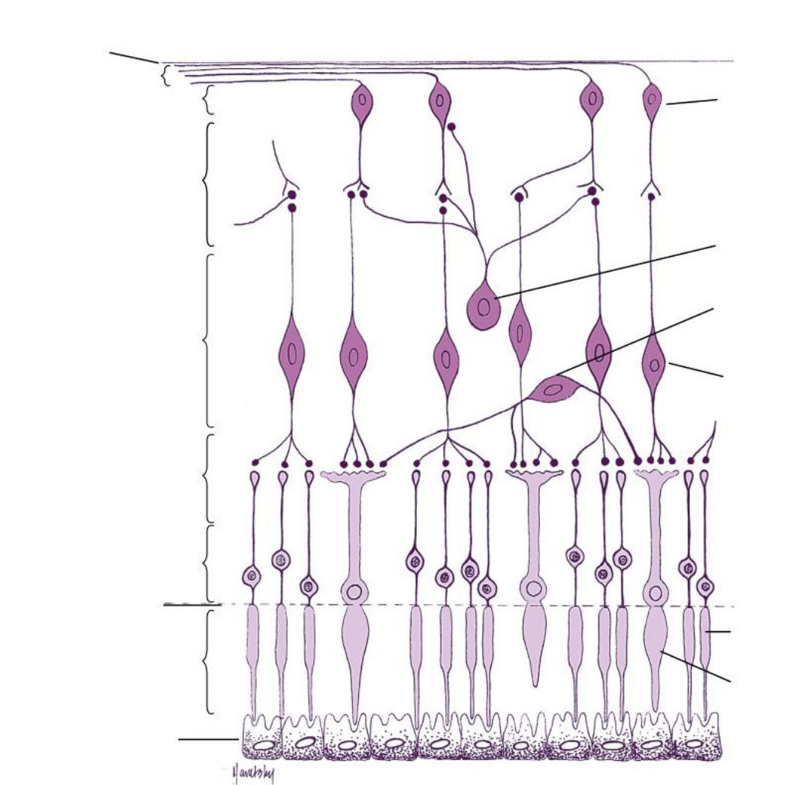
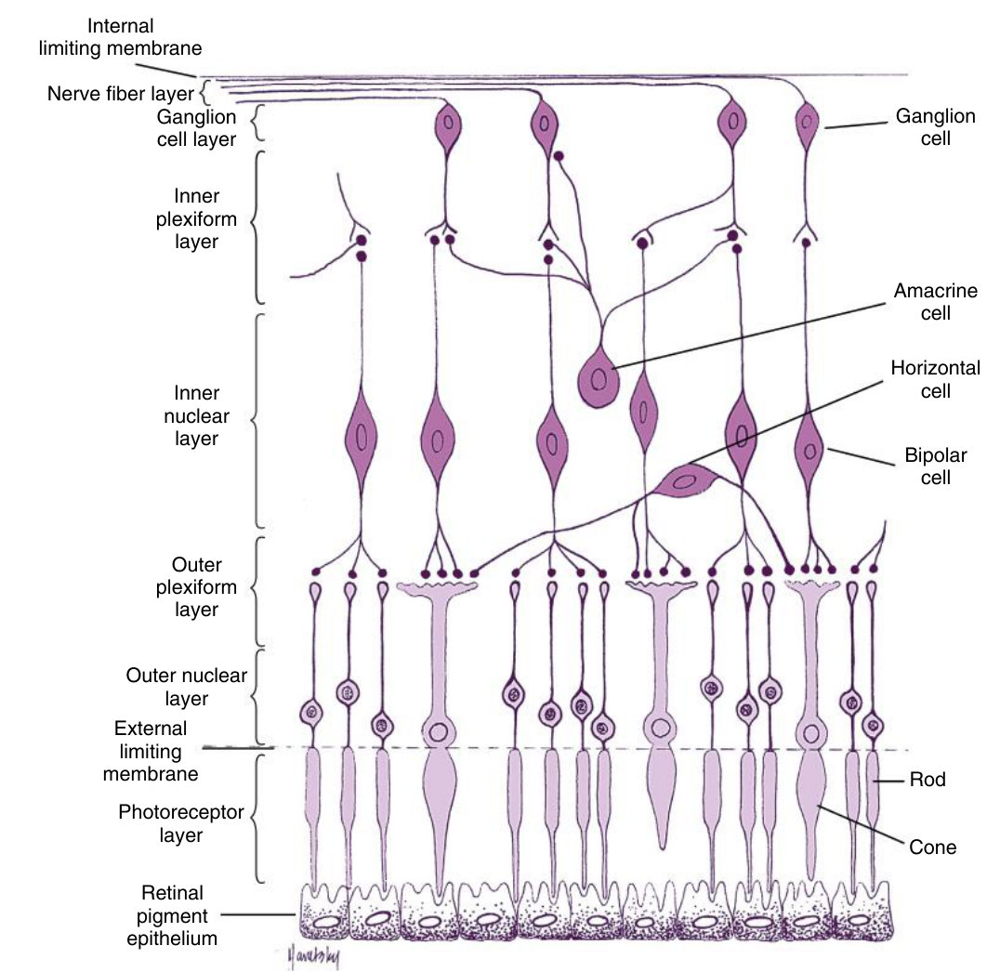
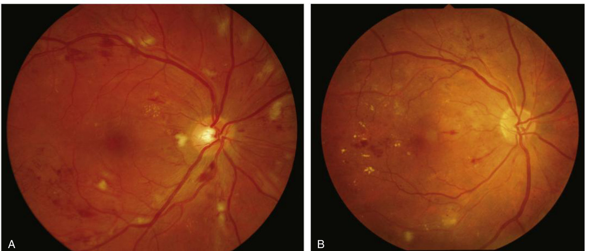
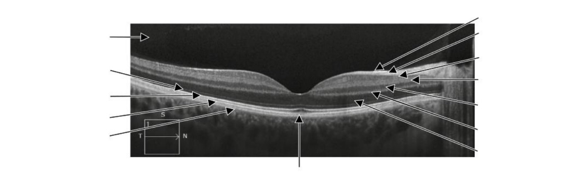
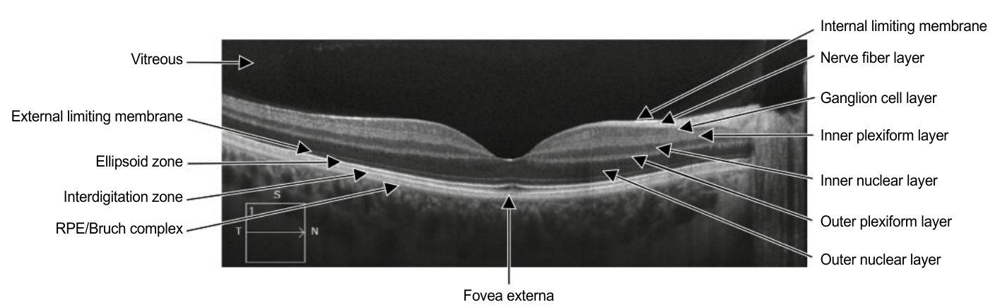

Ten layers, and how to read them on an OCT
The chapter with the most objectives in the course — and your review note says it plainly: "picture OCT". Expect a scan to label.
Name the ten layers from the RPE inward, say what lives in each, and then find them on an OCT using one rule: axons and synapses are bright, nuclei are dark.
Twelve objectives — the most of any chapter: the functions of the RPE · contrast the photoreceptors and when each is stimulated · the portions and functions of the photoreceptor · the types, functions and synapses of ganglion cells · identify each of the ten layers on an OCT · identify the photoreceptor parts on an OCT · the structures and connections in each of the 10 layers · the position of the macula relative to the disc · the fovea against the rest of the retina · the retinal and choroidal blood vessels · how the anatomy makes the blood retinal barrier.
Exam guidelines · p. 3–4
1. The RPE does five jobs
| Job | How |
|---|---|
| Blood–retinal barrier | zonula occludens between its cells; it moves nutrients in and waste out selectively |
| Phagocytosis | eats shed outer-segment discs — up to 2000 a day per cell; the residue becomes lipofuscin |
| Vitamin A | stores it and turns all-trans-retinol back into 11-cis-retinal for the rods |
| Growth factors | secretes VEGF, which keeps the choriocapillaris alive, balanced by antiangiogenic PEDF |
| Absorbs light | melanin granules soak up stray light and cut scatter |
The RPE is bonded hard to the choroid — its basement membrane is part of Bruch membrane. But between the RPE and the photoreceptors there are no junctions at all: only the subretinal space and the interphotoreceptor matrix. That is the weak plane, and that is where a detachment separates.
TB 8 · p. 111–112, 121–122 · Handout 7 · p. 2–3
2. Rods against cones
| Rods | Cones | |
|---|---|---|
| Work in | dim light — scotopic: sensitive, poor detail, no colour | bright light — photopic: acuity and colour |
| Pigment | rhodopsin | S (420 nm) · M (531) · L (588); ≥90% are L or M |
| Terminal | spherule, round | pedicle, broad and flat |
| Number | 80–110 million; none in the foveola; densest 20–25° out | 4–5 million; only receptor in the foveal centre |
| Convergence | many rods → one ganglion cell: sensitivity | down to 1:1 in the fovea: detail |
What makes a cell a rod or a cone is less its shape than the light level it works in — that is the phrasing the objective uses.
The six portions, outside in
And the counter-intuitive bit: in the dark the photoreceptor sits depolarised and releases glutamate steadily. Light closes its sodium channels, the cell hyperpolarises, and it releases less.
TB 8 · p. 113–115, 124–125
3. The other cells, and the ganglion types
Sideways: horizontal cells work in the outer plexiform layer, amacrine cells in the inner one. The rod signal takes a longer road: rod → rod bipolar → AII amacrine → ganglion cell. The Müller cell spans the whole retina, mops up potassium and glutamate, stores glycogen, and its endfeet form the internal limiting membrane.
| Ganglion type | Carries | Ends in |
|---|---|---|
| P (midget) — 80% | colour, fine detail, high contrast | parvocellular LGN layers |
| M (parasol) | movement and flicker | magnocellular LGN layers |
| Intrinsically photosensitive | contains melanopsin: responds to light with no photoreceptor at all | hypothalamus (circadian), pretectum (pupil), LGN |
Where the axons go, in one line: about 90% to the LGN for vision, the rest to the pretectal nucleus (pupil reflexes), the suprachiasmatic nucleus (circadian rhythm) and the superior colliculus (turning eyes and head). The ganglion cell is also the first retinal cell to fire action potentials.
TB 8 · p. 116–118, 123, 126–127 · Handout 7 · p. 5–7
4. The ten layers
| # | Layer | What is in it |
|---|---|---|
| 1 | RPE | one layer of pigmented cells; the outer barrier |
| 2 | Photoreceptor layer | outer and inner segments |
| 3 | External limiting membrane | not a membrane: zonula adherens between photoreceptors and Müller cells |
| 4 | Outer nuclear | rod and cone cell bodies; thickest in the fovea |
| 5 | Outer plexiform | spherules and pedicles meeting bipolar and horizontal cells |
| 6 | Inner nuclear | cell bodies of horizontal, bipolar, amacrine, Müller |
| 7 | Inner plexiform | bipolar axons meeting ganglion dendrites and amacrines |
| 8 | Ganglion cell | ganglion cell bodies; 8–10 deep near the macula |
| 9 | Nerve fibre | ganglion axons, unmyelinated, running to the disc |
| 10 | Internal limiting membrane | Müller endfeet + basement membrane |
In the nerve fibre layer blood spreads along the parallel axons: feathery, flame-shaped. In the inner nuclear layer, where cells stack vertically, it stays round: dot and blot. Seeing the shape tells you the depth.
TB 8 · p. 120, 134

Answer: Fig. 8.8 with labels

Left, top down: internal limiting membrane · nerve fibre · ganglion cell · inner plexiform · inner nuclear · outer plexiform · outer nuclear · external limiting membrane · photoreceptor layer · RPE. Right: ganglion · amacrine · horizontal · bipolar · rod · cone.

5. The same ten layers on an OCT
Axons and synapses are hyperreflective — bright. Nuclei are hyporeflective — dark. Your own note: "synapses = lighter, nucleus = darker". So plexiform layers and the nerve fibre layer glow; the three nuclear layers are dark bands.
Reading down from the vitreous: ILM (thin bright line) · NFL (bright, thicker toward the disc) · GCL (dark) · IPL (bright) · INL (dark) · OPL (bright) · ONL (the thick dark band, thickest under the fovea) · ELM (faint bright line) · then the photoreceptor bands: ellipsoid zone (inner-segment mitochondria) and interdigitation zone (outer-segment tips meeting RPE microvilli) · and finally the RPE/Bruch complex, the most posterior bright band.

Work down the stack naming each band, then check. Note the single arrow from below: at the fovea the elongated cone outer segments push the outer bands down, and that bulge is the fovea externa.
Answer: Fig. 8.13 with labels

Left, top down: vitreous · external limiting membrane · ellipsoid zone · interdigitation zone · RPE/Bruch complex. Right, top down: internal limiting membrane · nerve fibre · ganglion cell · inner plexiform · inner nuclear · outer plexiform · outer nuclear. Bottom: fovea externa.
6. Fovea against the rest
| Fovea / foveola | Rest of the retina | |
|---|---|---|
| Photoreceptors | cones only centrally; rod-free zone 0.35–0.7 mm; highest cone density | rods outnumber cones, densest 20–25° out |
| Vessels | foveal avascular zone 0.4–0.7 mm — fed by the choroid alone | three retinal capillary plexuses in the inner layers |
| Inner layers | pushed aside onto the walls; cone axons run obliquely as the Henle fibre layer | all ten layers present |
| Wiring | ≈ 1 cone : 1 ganglion cell → detail and colour | high convergence → sensitivity and motion |
Where the macula sits: its centre is about 3.5 mm temporal to the disc edge and about 1 mm inferior to the disc centre. It looks darker because its RPE cells are taller and more pigmented and the choroid beneath is thicker; the yellow comes from lutein and zeaxanthin.
TB 8 · p. 128–130
7. Two blood supplies, two barriers
The three retinal plexuses: radial peripapillary (in the nerve fibre layer, parallel to the axons), superficial (ganglion cell layer), deep (edges of the inner nuclear layer). Temporal branches arch around the macula, leaving it clear.
Outer: the choriocapillaris is fenestrated and leaks, and Bruch membrane passes molecules easily — so the seal must be the RPE zonula occludens.
Inner: retinal capillaries are unfenestrated, with their own tight junctions and pericytes; they are end vessels, autoregulated, with no autonomic control. The choroid is the opposite: fenestrated, innervated, enormous flow.
TB 8 · p. 132–134 · Handout 7 · p. 3, 14
Present in 15–20% of people, it enters at the temporal disc edge but comes from the choroidal circulation and supplies the macular area. If the central retinal artery occludes, it can keep central vision alive.
TB 8 · p. 133 · Handout 7 · p. 15
8. Drill
More: Mixed quiz — Chapter 7 · pictures only: Image quiz — Chapter 7.
Read study script § chapter 7, sections 5 and 6 — the layer table and the OCT table side by side. Then open Fig. 8.13 and name the bands until you no longer count on your fingers. This chapter has twelve objectives; it deserves more than one sitting.
Ask your teacher — "why is the outer nuclear layer thickest exactly where there are no rods?", "quiz me on the OCT bands only", "explain again why the inner retina has its own barrier".